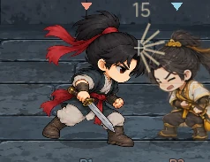
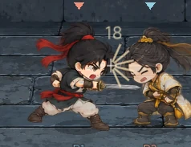
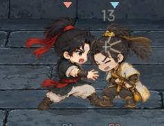
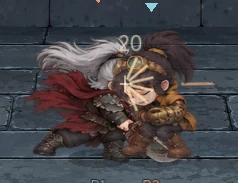
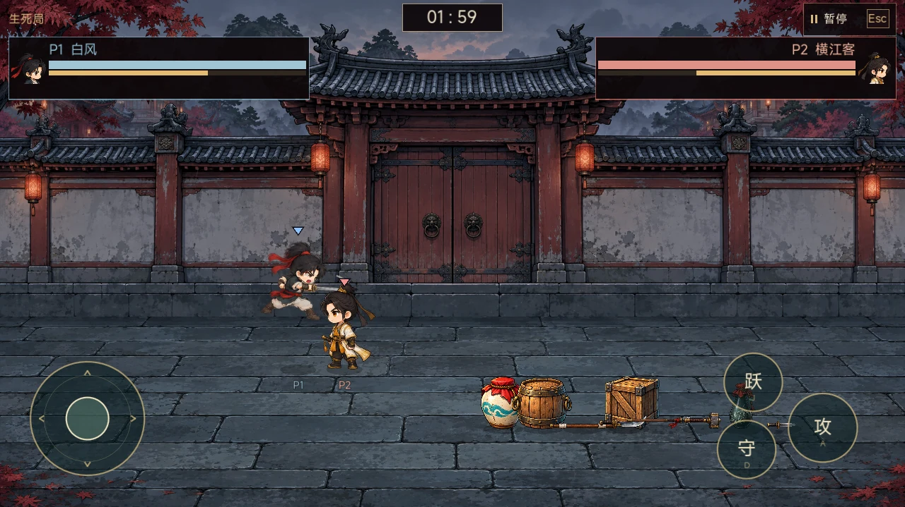
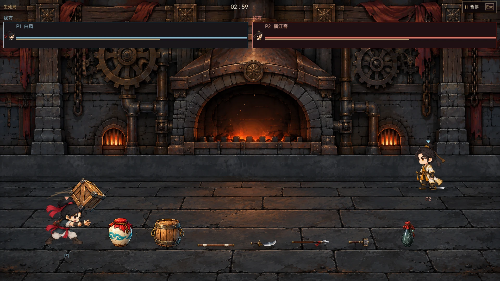
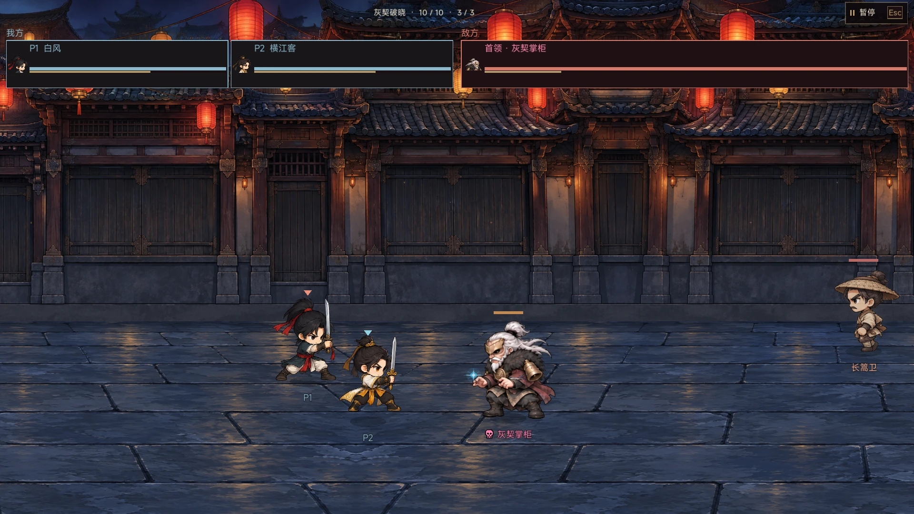

直接按攻击


横版武侠动作 · Godot
读招、换线，用第三击决定追上去还是退半步。这款横版武侠动作游戏既能与朋友同屏对招，也能结伴闯过主线。

Windows 可玩开发版 · Steam 发行筹备
风格参考《影之刃》系列的暗黑江湖，动作参考聚焦兵器的重量、相邻动作的衔接，以及打完一套后的收势。白风的轻剑强调点刺和回锋，赤砧的重锤先沉肩蓄势，锤落下去后还得收住重心。《影之刃零》官方参考
12 名角色各有 7 种普攻动作，使用同一套操作理解不同兵器。地面两击起手后，第三击可按前追击、按后退击，或直接完成常规收尾。跑中攻击和空中攻击各有独立动作。



连击允许提前输入，角色打完当前动作才接下一击。较长的进身收势让对手有机会反打，退身收尾则给双方留出重新站位的空间。
进攻前先看距离和场地纵深。玩家可以侧闪换线避开直线压力，再利用对手收招的时机切回近身。
白风的挑灯斩是沿面向挑刺，打中后让对手离地。普攻或挑刺都要先站到交手纵深，刀光扫过与命中判定各有范围。

赤砧的横锤撞阵借跑动缩短距离，出手后要收势。白风跃起后可接燕落斜削，命中要同时看横向距离和双方高度，跳过对手头顶也可能挥空。


逐线飞芒沿面向送出细窄剑气，适合堵住一条进路。千线寂灭蓄势后绕身重斩，红光提示不可格挡。蓝光可防的提示与红光一起，让防守方判断该接招还是离开攻击范围。

拾取要花站位和出手的机会。拉开半步捡兵器，能用新攻击方式再进场。场边的箱子也能抛出，逼对手从当前线路让开。

清完当前敌人后，路牌提示接下来的支路。场景移镜让玩家看清新位置与对手，再开下一波战斗。章节选择页把关卡预览、阵容和解锁进度放在一起，方便朋友选好同一趟行程。

队友可以分走不同纵深，一人牵制正面的威胁，另一人换线找出手机会。章节末把剧情、增益选择和解锁接回下一轮闯关。

「江湖恩怨」把阵容、胜负规则和快速开局放在一起。多人键盘和手柄可以分别调整按键，同一套招式逻辑适用于不同输入。

训练先练命中，再接连击、防守和侧闪。提示紧跟着输入和完成结果，玩家能看出问题出在距离、按键顺序还是时机。